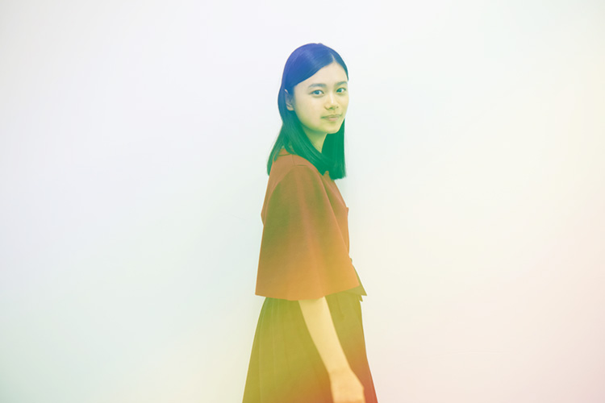
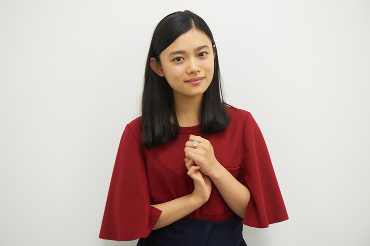
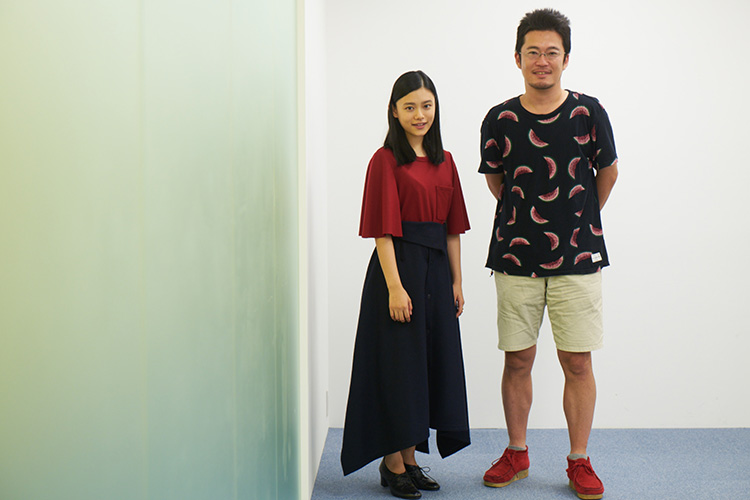

綿密な構成による脚本と「人間らしさ」に拘る演出で一貫して家族を描き、前作はベルリン国際映画祭に正式招待された中野量太監督。完全オリジナルによる新作にして、商業映画第一作となる『湯を沸かすほどの熱い愛』は、余命幾ばくもない母親が、家族のためにやり残したことを強い意志で敢行していく無償の愛の物語。どんな状況にも屈しない人間味ある母親、双葉（宮沢りえ）と向き合いながら、たくましく成長していく娘、安澄役を務めるのが、実力派若手女優、杉咲花。物語を引っ張っていく難しい役柄をいかにして体現していったのか、彼女自身と中野監督に話を聞いた。
俳優、女優に求めるものを「感度」という言い方を僕はするんですけど、その感度がまぁ豊かなんですよ。（中野）
この映画は、双葉と向かい合う安澄の成長物語でもあるように感じました。杉咲さんが安澄を演じることで、それが色濃くなったんじゃないでしょうか？
中野：
この映画で唯一、当て書きをしたのが、安澄なんです。もちろん、双葉（宮沢りえ）が主役ではあるんですけど、「残された人がどう生きるか」が常に僕の映画のテーマであるので、今回、残される側の中心となる安澄が成長するシーンはどうしても撮りたくて、この役に相応しいのは誰だろうと考えた時に浮かんだのが、花でした。実は２年前くらいから一緒にやりたいと思っていたんです。
それは杉咲さんの出演作品を観て、感じたんでしょうか？
中野：
CMか何かでほんの些細な瞬間を見てのことなんです。俳優、女優に求めるものを「感度」という言い方を僕はするんですけど、その感度がまぁ豊かなんですよ。ほんの一瞬、見ただけですぐにそれは分かって。
杉咲：
ちょっと恥ずかしいです（笑）自分では分からないので。
中野：
あるんですよ、自覚していないだけで。
杉咲：
日常で、深く深く考えてまうところはあります。例えば、母親と喧嘩してる時に、ふと我に返って、今、自分はこんな顔をしてる気がすると思ったり、集中して映画を観てる時に、集中して映画を観てるなって思う自分がいるんです。それが邪魔して、逆に集中して観られなくなったり。
常に俯瞰してるというのは、感受性が豊かなんでしょうね。
中野：
安澄って難しい役だと思うんですけど、杉咲花でやると決めてから、書けたところはあるんです。とか言いながら、一回も会ったことはなかったんですけど（笑）
初めて会ったのは、本読みや衣装合わせになるんですか？
中野：
それが違うんです。オファーを出して、出演OKの返事は貰っていたんですけど、まだ会ってはいなくて、いつ会えるかなと思っていた頃に、ちょうど『トイレのピエタ』（松永大司監督）の試写があって、個人的に足を運んでいたんです。試写室の席に座っていたら、前から花が現れて（笑）
杉咲：
（笑）
中野：
こんなところで会ってしまったと焦りつつ、なるほど、こんな感じか、と思ったりもしながら（笑）
杉咲：
私は中野監督の映画ということを知らなかったんです。宮沢りえさんの主演映画としかまだ聞いてなくて。脚本も頂いていなかったので。
中野：
ご挨拶した方がいいのかなとか考えを巡らせていたら、偶然にも僕の席の隣に座ったんです。これは不味いと思って、その場で声を掛けるべきか、プロデューサーの深瀬さんに相談のメールをしたんです。そしたら、「怪しい人にならないように気をつけて下さい」って返信がきて（笑）
杉咲：
そうだったんですね（笑）
中野：
それで話し掛けたら、「え？」みたいな表情で。たぶん変なおじさんと思われたんじゃないかな。
いや、いや（笑）そんなことはないと思います。
杉咲：
私は映画のタイトルも聞いていなかったので、「『湯を沸かすほどの熱い愛』の中野です」と言われてもすぐに分からなかったんです。監督の代表作をおっしゃったのかと思って、申し訳ないけど分からない、どうしようって。
中野：
話してる途中で、「もしかして、宮沢りえさんの出演映画ですか？」って気付いてくれたんです。それでもまだ、監督じゃなくて、関係者の誰かと思ってたでしょ？
杉咲：
そんなことはないです。だって、酷いんですよ。まだ脚本を読む前だったのに、そこで映画の結末を言われてしまったんです。それには本当にビックリでした（笑）
中野：
ごめんなさい（笑）もう全部読んでくれているものだと思っていたから。そんな感じの出会いでした。

「家族に見えるように、家族になって欲しい」と言って頂いて、私にはそのやり方はすごく向いていると思いました。（杉咲）
脚本を読んでみて、自身が演じる安澄にどんな印象を持ちました？
杉咲：
当て書きをして下さったと聞いて、私は自分の中にあるものだけで演じようとしていたんですよ。それで初めて本読みをした時に、少し違ったみたいで。最初は強すぎたんです。お母ちゃんとの喧嘩のシーンでも、力任せにやり返すみたいなことをしていて、監督から「安澄はもっと弱いから、そうじゃないよ」って言ってもらったのを覚えています。
中野：
今回、花だけ事前リハーサルを何回もやって、僕はプレッシャーをかけていたんです。この映画の要は安澄だからって。プラス、僕もこの映画は安澄をちゃんと構築出来れば、他はみんな着いてくると確信していたので。
安澄を立体的にするためのブレない軸は何でしたか？
中野：
ちゃんと親子の関係性に見えること。親子なら親子、姉妹なら姉妹に見せるのではなく、見えるところまで持っていきたかったんです。妹の鮎子役の伊東蒼ちゃんは、そこまで演技経験のある子ではなかったので、初日からシリアスな病院のシーンという中、待ち時間も花が蒼の手をずっと握ってくれていました。確か、現場に入る前からコンタクトしてくれてたんだよね？
杉咲：
連絡はずっと取り合っていました。
鮎子役の伊東蒼さんと事前に関係性を深めようと意識したんですね。
杉咲：
蒼は周囲にとても気を使うし、遠慮がちな女の子で、私自身もひとりっ子で妹がいないので、歳が下の子と仲良くなれるかなって不安があったんです。でも鮎子とはちゃんと繋がっていたいと思ったので、どうしたらいいか私なりにいつも考えていました。写真を１日１回ずつメールで送り合う約束を監督としていたんです。
中野：
それは宮沢さんも含めて、必ず毎日メールをし合うと決めました。
杉咲：
だから、蒼とは毎日、変顔を送り合ってました（笑）
なるほど（笑）そういった役作りの経験はこれまでありましたか？
杉咲：
初めての経験でした。「家族に見えるように、家族になって欲しい」と言って頂いて、私にはそのやり方はすごく向いていると思いました。そのおかげで現場の居心地が良かったんだなって振り返ると改めて思います。
中野：
そういうことを花を中心にしてやって欲しいと思っていたんです。それに100％に近く応えてくれたと思います。長い撮影の中で、宮沢さんが花に引っ張られたシーンもありましたから。
冒頭の安澄の成長物語という話に繋がるんですが、安澄が最初に乗り越えるものにいじめがありますよね。
杉咲：
いじめっ子役の３人とは、初日から距離を置いて話さない関係に自然となっていました。
中野：
いじめのシーンについては、いじめる側の３人の演出を集中的にしましたね。３人にはずっと一緒に行動するように求めました。いじめではなくて、嫌がらせの延長がいじめに見えるようにして欲しい、と。「This is いじめ」にならないようにという言い方をしていました。それは噓臭くなるからなんです。いじめって、ちょっとした悪意の重なりがいじめに発展してると思うので。
安澄が絵の具でのいじめを受けた後に、双葉が呼び出されて保健室にやってくるシーン。ここの２人の表情のカットバックが素晴らしくて。
中野：
実はあのシーンが、宮沢さんが花に引っ張られたと思うシーンなんです。ここから宮沢さんは花に一目置くようになったんじゃないかな。花を認めたという言い方は変ですけど、あのシーンで、宮沢さんは本当の母と子の関係を築けると感じたと思うんです。
杉咲：
このシーンを演じきらないと、この映画は成功しないって私は思っていたんです。だからすごく緊張してました。
中野：
あのシーンで、どんなことがあっても救おうとする母と子の関係性に観ている人をグッとさせられたら、と思っていたんですよ。そうすれば、それ以降はどんな事件が起きても感情移入してしまうはずだと思ったから、そこまでが勝負だよって言い続けていたんです。それもあって、かなりテイクを重ねたシーンになりました。

宮沢さんのカットを撮っている時に、おそらく、カメラには映っていない花の芝居が宮沢さんには刺さっていたんです。（中野）
双葉、安澄、鮎子の３人は車で旅をすることになります。静岡ロケだったそうですが、ロケを通じて、関係性に深まりは感じましたか？
中野：
何気ないことなんですけど、ドライブインで拓海（松坂桃季）と３人が別れるシーンで、双葉の「走ると滑るよ〜！」って台本に無い台詞に対して、安澄と鮎子が同時に「は〜い！」って言うんです。それを見た時にいいなって思って。宮沢さんが自然に言った言葉に、２人が同時に答えられるような関係性になっていたから。前半の撮影を経て、安澄と鮎子の２人はいい関係性になっていましたね。
杉咲：
前半は栃木でのロケが多くて、栃木のホテルに泊まっていたんですけど、基本的に蒼と一緒に寝てました。それぞれに部屋は用意されてたんですけど。
旅を通じて、双葉と安澄の関係は大きな岐路を迎えますが、あらためて、宮沢さんとのお芝居について聞いてもいいですか？
杉咲：
クランクインする前に、お母ちゃんが…
宮沢さんは、今でもまだお母ちゃんなんですね。
杉咲：
はい。今になって、何て呼べばいいか分からなくて（笑）
お母ちゃんのままで大丈夫です。
杉咲：
常に「どれだけ時間が掛かってもいいから、気にしないで」って言って下さったんですよ。お母ちゃんにそう言ってもらえたことで、宮沢りえさんとご一緒することへの緊張感が一切無くなったんです。お母ちゃんは自分が映ってない時も本番と同じお芝居をして下さるんです。それは、簡単なことではないと思っていて、それに救われました。さっきの保健室の絵の具のシーンも何回も撮ったんですけど、お母ちゃんがずっと同じ表情をしてくれて。
２人の表情をそれぞれ別で撮る必要があるからですね。
杉咲：
そうなんです。まだ自分のカットを撮っていない時に、相手のためにお芝居をして、自分のカットを撮る時に同じように出来なかったらどうしようって私なら思うし、それでも何度もやって下さるのが本当に有り難かったですし、私も相手のためにそうしたいって思わせてくれました。
中野：
そういう意味では、２人が完全に呼応し合ってると思った最高峰が、港のシーンでした。それぞれワンテイクずつで終わってはいるんですけど、映っていない時も相手を受ける芝居をして欲しいとお願いしていたんですね。宮沢さんと後日話す機会があったんですけど、「あんな顔をされたら、私はあの芝居をするしかない」って。宮沢さんのカットを撮っている時に、おそらく、カメラには映っていない花の芝居が宮沢さんには刺さっていたんです。だから、僕が求めることが花は出来ていたってことだと思います。
杉咲：
ありがとうございます。

この映画は脚本が本当に巧みで唸らされるんですけど、それだけではなく、血の通った人間が生きていると感じるからこそ胸を打たれます。中野監督の映画に共通している「ウェルメイド」では終わらせない、その神髄はどこにあるんでしょうか？
中野：
たった1人のキャラクターを作ることなんです。安澄という人間は1人しかいない。安澄という人間の感情表現は１つしかない。僕はそういう言い方をしているんですけど、たった1人の唯一無二の人間を作って、その人らしさを表現したら、それに観客は感動してくれるはずなんです。僕らが何に感動するかって、人間としてのその人らしさだと思うので。例えば、安澄が教室である姿になって訴えるシーンでは、普段は絶対に出来ない子がそれでも懸命にやることに重みがある。平気で出来る子では駄目なんです。それを汲んだ芝居を花がちゃんとしてくれたことで、それが安澄らしさになる。全シーン、そういう細部に拘りましたし、花はそれに応えてくれたと思います。